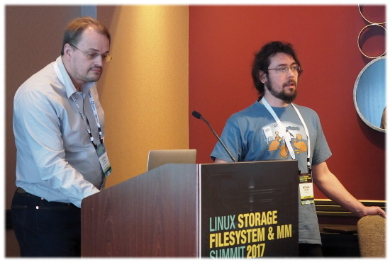

Slab reclaim
Slab reclaim is handled with shrinker callbacks; when the system needs more memory, the shrinkers are called and asked to free some objects. The hope is that the shrinkers will manage to do something useful, but that is not what really happens. The biggest problem is that there is no connection between the pages the kernel would like to free and the objects that have been allocated from those pages. All objects in a page must be freed to make the page itself freeable, but there is no way to focus shrinker activity on the objects in a specific page.
Some years ago, Hocko said, Dave Chinner had come up with an interesting idea: rely on the slab allocators more for reclaim. If the allocators kept objects in least-recently-used (LRU) lists, they could perhaps reclaim those objects in a more useful way. But nobody cared enough to implement that suggestion, so it remains just an idea.

Lameter then talked about a different approach that he has been working on for some time. It involves adding a couple of callbacks to the slab allocator which could be used to ask a subsystem to relocate objects that are in the way of freeing a page. The first of those would be something like:
void *isolate_object(struct kmem_cache *cache, void **objs,
int nr, int node);
This function should prepare to relocate the objects found in **objs; it should, among other things, ensure that all of the objects are stable and will not be changed until the operation is complete. Once that is done, the second callback will be invoked:
void migrate_objects(struct kmem_cache *cache, void **objs,
int nr, int node, void *private);
This callback should try to move the given objs to a new location; it can also simply free them if that is the better course. Once it's done, if all the objects in a given slab page have been moved, the page itself can be freed.
The first implementation of this mechanism was done in 2007. Perhaps, Lameter suggested, the time has come to merge it and start making use of it. As memory sizes get larger, he said, the need for better slab reclaim will only get more urgent.
Andrea Arcangeli suggested a different approach: simply allocate slab objects from virtually mapped pages. Then, if the page needs to be relocated, it is simply a matter of changing the mapping in the page table. This would enable easy movement of slab-allocated objects between nodes while completely avoiding the need to track pointers to the objects themselves. That avoids what was described as the main downside of Lameter's scheme: the need to add mobility to each type of slab-allocated object.
The problem with this approach, as Rik van Riel pointed out, is that it is not useful if the objective is to move slab objects to defragment pages. That might be the most important use case, he said; he has seen many systems out there with a lot of memory tied up in slabs that are 95% empty. Arcangeli responded that there are three uses for this sort of mechanism: memory hotplug, compaction, and out-of-memory avoidance, in that order. His virtually-mapped idea addresses the most important of the three, he said, and can even work with objects allocated with kmalloc(), which are otherwise problematic.
The session came to an end at this point without having reached any real
decisions. This conversation will need to continue on the mailing lists,
presumably in the presence of specific patches to discuss.
| Index entries for this article | |
|---|---|
| Kernel | Memory management/Slab allocators |
| Conference | Storage, Filesystem, and Memory-Management Summit/2017 |
Posted Mar 23, 2017 4:20 UTC (Thu)
by neilbrown (subscriber, #359)
[Link] (1 responses)
Really? I accept that all three of these are important. I do wonder if everyone would agree with that particular ordering. For some people, memory hotplug is doubtlessly an important issue. For many others, it is completely irrelevant.
> That avoids what was described as the main downside of Lameter's scheme: the need to add mobility to each type of slab-allocated object.
Is that *really* a need? Often there are just a few slabs which cause most fragmentation. Adding mobility (or the simpler "selective freeing") to just those would presumably bring most of the benefit. Others could be added as developers are motivated.
> objects allocated with kmalloc(), which are otherwise problematic.
Problematic in theory, certainly. Problematic in practice? I'd like to see evidence.
One allocation that occurs to me as being problematic is the kmalloc() in __d_alloc().
So yes, kmalloc() can be problematic. But once the problems are identified, they can also be solved.
I agree with Lameter here:
> the time has come to merge it and start making use of it.
Posted Mar 23, 2017 16:25 UTC (Thu)
by willy (subscriber, #9762)
[Link]
We focused on the dentry and inode caches, the radix tree node and ... I've forgotten the name of the fourth.
Slab reclaim
When a filename is longer than DNAME_INLINE_LEN (32), a kmalloc is used to allocate extra memory to attach to the dentry to hold the name.
If the slab holding that name wanted to free up the page, something would need to be able to link
back to the dentry. That probably means creating a new slab with entries containing both the name and the dentry pointer. A bit of a pain, but quite do-able.
Slab reclaim